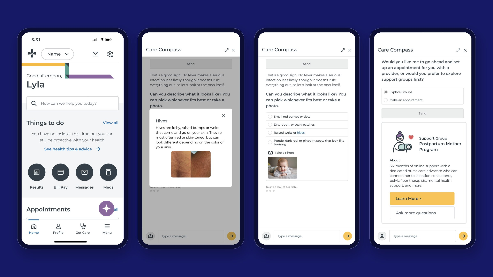
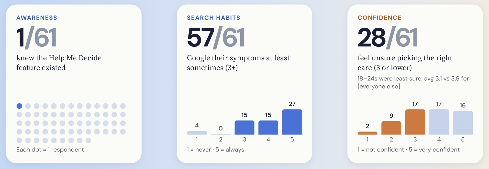
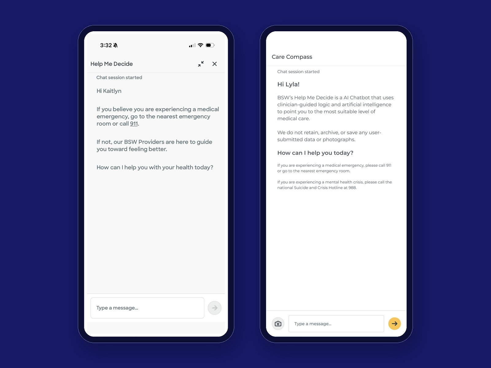
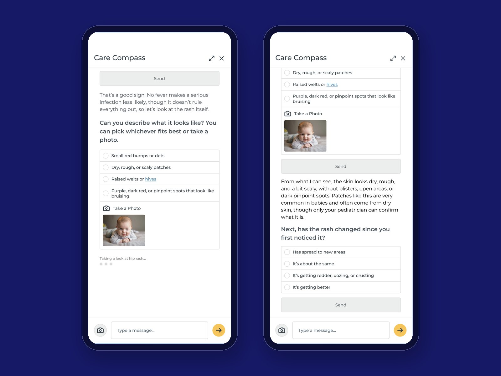
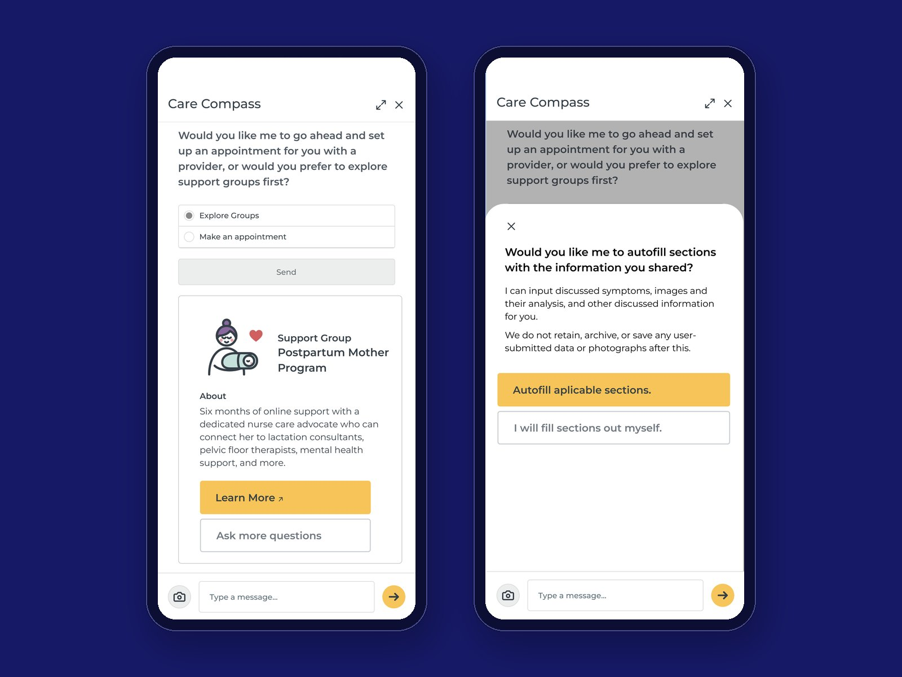
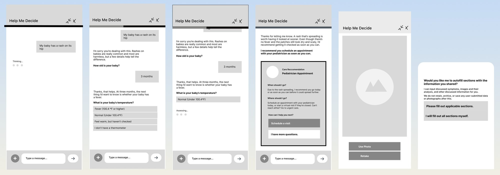
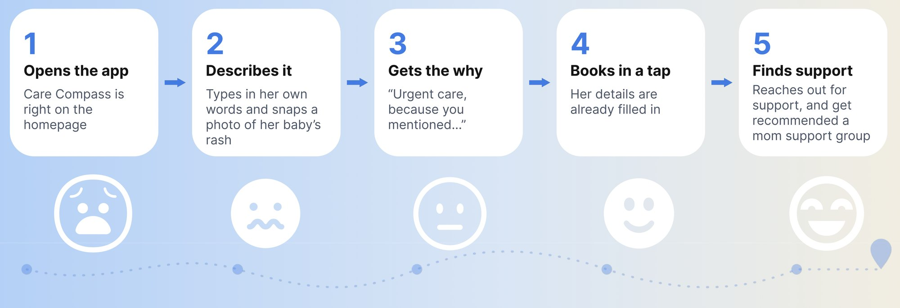

24-HOUR UX DESIGN-A-THON • OCT 2026
Care Compass
It's 2 a.m. and a new mom spots a rash on her baby's hip. She's exhausted, she's scared, and she doesn't know if this can wait until morning. Care Compass is our redesign of Baylor Scott & White's "Help Me Decide" chat, built so she can find it, trust it, and know where to go for care, and why.

- Role
- UX research & testing
- Team
- 4 people
- Timeline
- 24 hours, Oct 2026
- Tools
- Figma, Figma AI, Claude
- Research
- Cognitive walkthrough, 61-person survey, competitive analysis, usability test with 13 people
- Deliverables
- Lo-fi and hi-fi Figma prototypes, persona, journey map, pitch deck
- My contributions
- UX research, the lo-fi prototype and its user testing, and the pitch deck
- AI use
- We used Claude to help with research, survey analysis, and copy, and to build a design system from the BSW app; Figma AI for prototype loading animations
Overview
Problem
The MyBSWHealth app's "Help Me Decide" chat is supposed to point people to the right kind of care. But almost no one knows it exists, and the people who do find it call it repetitive, long, and hard to trust. It asks question after question and never says why.
Goal
The prompt asked us to make the chat easy to find, trustworthy, and clear about the next step, and to keep it simple, inclusive, and transparent. We focused on new mothers, who are looking after their own recovery and their baby's health at the same time.
Impact
This was a 24-hour design-a-thon concept, so there's no real-world usage data. We did test the lo-fi prototype with 13 people. See Process below.
Research
We started by asking which group goes through a life-changing experience that might need extra reassurance about health. New mothers stood out. About 9 in 10 new mothers search online after birth when they have questions about their baby's health or their own (Slomian, 2017), and first-time moms are about twice as likely to experience postpartum depression and breastfeeding problems as experienced moms (Lacted, 2019).
To make it concrete, we built a persona: Lyla, 31, a data analyst in Dallas on maternity leave, struggling with postpartum and missing the structure her job used to give her. She wants trustworthy answers about her baby, support for her own recovery, and to make decisions without sifting through conflicting advice online.
Walking through the current chat
We used Help Me Decide as someone with a mild fever, then as someone with severe abdominal pain, to find where it breaks down.
Too much effort
It demands a lot of thinking from someone who's already exhausted.
Repeated questions
It asked about symptoms we had already named and described.
No reasons
It never explained its recommendations, and it didn't carry our answers over when it was time to book.
Surveying 61 people
We surveyed 61 people to understand how they look for care. Only 1 of 61 knew Help Me Decide existed. 57 of 61 Google their symptoms at least sometimes, and 28 of 61 feel unsure about picking the right kind of care. People aged 18 to 24 were the least sure (an average of 3.1 out of 5, compared with 3.9 for everyone else).

We also asked what makes people trust a product enough to share health information:
72%
trust an AI tool when it explains the reasoning behind its answers.
61%
trust an app more when a real nurse is available.
59%
find products designed by medical professionals more trustworthy.
Looking at the competition
Mayo Clinic
Detailed, research-based content, but no way to type freely and no guidance on what to do next.
Ubie Health & Patient GPT
Conversational, built by doctors, and shows how many questions are left. Even so, users said they "can't trust it."
AI search overviews
Instant, sourced, and adaptive, but not connected to your care or your doctor.
Insights
Put together, the walkthrough, the survey, and the competitors pointed to five pain points: the chat is hard to find, it repeats itself without context, people don't trust it, its next-step advice has no reasoning, and people are wary about their privacy. Three findings shaped the redesign most.
Insight 01
You can't use what you can't find.
Only 1 of 61 people knew Help Me Decide existed, and most just Google their symptoms.
So it moved to the home screen and got a clearer name: Care Compass.
Insight 02
Trust comes from reasons.
72% trust an AI tool that explains its reasoning, and the current chat never does.
So the chat says why it's asking each question and why it recommends each next step.
Insight 03
She's already exhausted.
The current chat repeats questions and asks a lot of someone caring for a newborn.
So it talks like a person, can look at a photo instead of asking more questions, and fills in the booking for her.
Design decisions
We picked six things to change: where the chat lives, its name, a photo scan, a more conversational approach, clear disclosures, and new care outcomes for mental health. Three of them came with real tradeoffs.

Honest up front, without a wall of text
People were wary of the chat, so the first message now says what it is (an AI chatbot that uses clinician-guided logic), what it can and can't do, and that nothing you share is saved. Emergency and crisis numbers (911 and 988) stay in small text underneath, so they're always there without scaring someone with a mild question.

Faster answers vs. privacy
Describing a rash in words is hard when you're holding a crying baby. So she can snap a photo, and the chat looks at it and asks fewer questions. The photo is optional, the chat reminds her that only her pediatrician can confirm what it is, and everything she shares is deleted when the chat ends.

More than "go see a doctor"
New mothers are vulnerable to postpartum depression and stress, and not every worry needs an appointment. So the chat can point to BSW's existing Postpartum Mother Program, with six months of online support from a nurse care advocate. When she does need a visit, it offers to fill in the booking with what she already said, and only if she says yes.
Process
We built a lo-fi prototype around one scenario: Lyla's baby has a rash on her hip. The chat responds with empathy, asks one question at a time, explains why each answer matters, and ends with a clear recommendation and an offer to autofill the booking.

We tested it with 13 people. Every one of them found it straightforward and easy to understand. Their time to finish was similar to the original app, but they didn't feel frustrated by the questions, because each one came with a reason.
Testers said moving through it felt “smooth” and “intuitive,” and they liked hearing why the chat was asking each question.
11 of 13 loved the photo scan
They found it new and easy to use. Some worried about privacy, which is why the final design says plainly that photos are deleted when the chat ends.
11 of 13 liked the pop-ups
Being able to see what a symptom like hives looks like helped. Some worried it could start to feel like a diagnosis.
Only 1 of 13 noticed the progress tracker
It turned out to be redundant, and it clashed with the conversational feel.
10 of 13 would trust it
But 3 of those 10 said that was only because of the BSW name. Trust in the brand was doing some of the work.
Outcome
The final design walks Lyla from her first worry to the right care: she finds Care Compass on the home screen, describes the rash in her own words or with a photo, hears why the chat recommends what it does, books in a tap, and finds support for herself along the way.
A chat that explains itself
Every question and recommendation comes with a reason, in a warm, conversational tone.
Photo scan and pop-ups
Show instead of describe, and see what a symptom looks like before answering.
Care beyond appointments
Support groups for postpartum mental health, plus booking that's already filled in.

What I’d test next
All 13 of our testers saw the lo-fi prototype, and I don't know how many of them were new mothers. Next I'd test the hi-fi design with new moms specifically, ideally in a stressful moment like the one we designed for. I'd want to know whether the explanations actually build trust on their own, since 3 testers only trusted it because of the BSW name, and whether the symptom pop-ups ever read like a diagnosis. Our team's next steps from the pitch were to build an MVP with LLM engineers, add voice-to-text so a parent can describe symptoms hands-free, connect the chat's answers straight into MyBSWHealth scheduling, and add a severity scale to flag critical issues faster.
Reflection
- [TBD: what you learned from running the research and testing in only 24 hours]
- [TBD: what you took away from the progress tracker testing well on paper but clashing with the conversation]
- [TBD: what designing a trustworthy AI for worried parents taught you about trust and transparency]